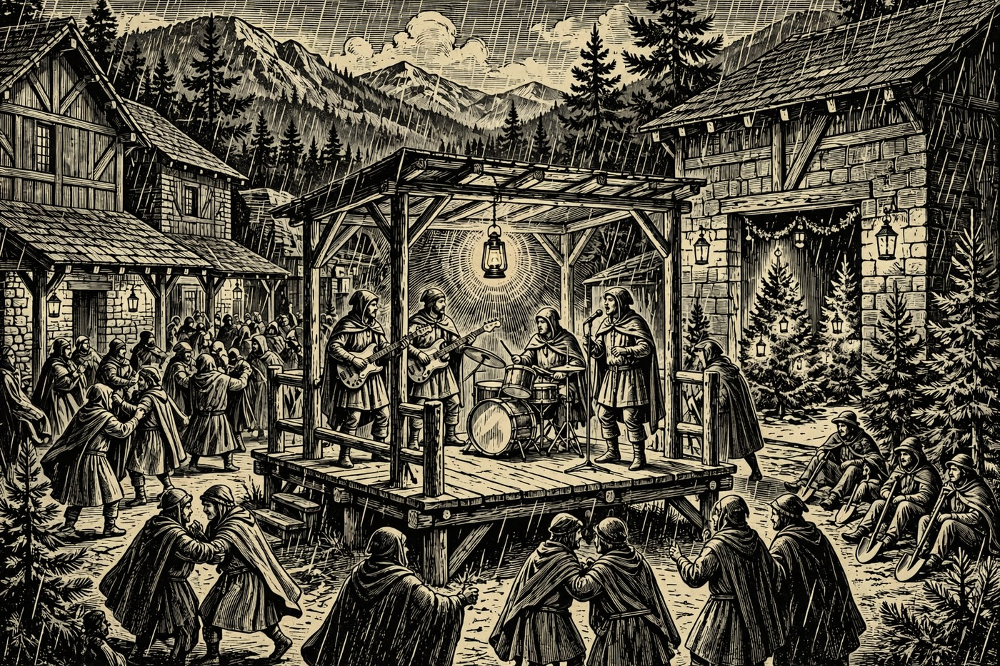
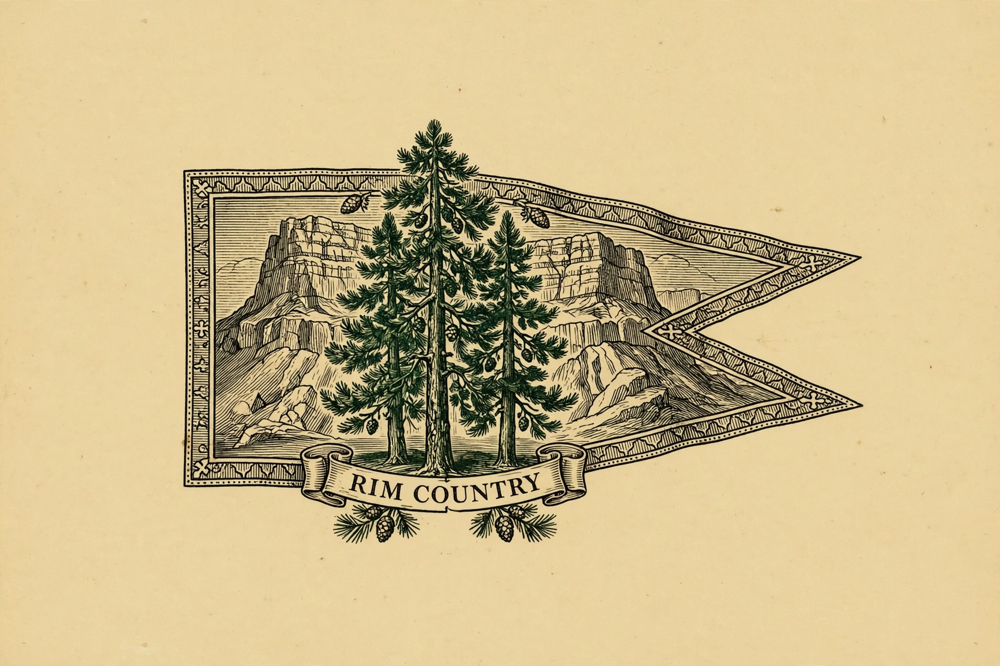

By Muggy · Payson, Ariz.
By Muggy · Payson, Ariz.

Hail, guest of the Hearth, and a wet Tirdas to you — come in out of the rain and shake the drops off your cloak by the fire. Payson sings tonight as The Dreamboats bring the golden age of rock and roll to town, while Longhorn wrestlers meet Show Low and Blue Ridge on the mat. Trail volunteers build in Pine this morning despite the wet, Sedona sounds its crystal bowls, Prescott opens its Festival of Trees with a gala tonight, and the days ahead bring a flag dedication, comedy, charcuterie, and Saturday’s Turkey Trot.
Happening in the Holds Today
 Payson— The Dreamboats, 7:00 PM at 301 S. McLane Road, Payson. This four-piece band revives the golden age of rock and roll, with the heartthrob energy of Elvis Presley, Chuck Berry, Buddy Holly, and The Beatles brought back to life on stage. Expect classic tunes you can sing along to from the first chorus. Music lovers of every age will feel right at home. A perfect rainy-night reason to get out of the house and into a warm hall.— Wrestling vs. Show Low / Blue Ridge, 4:00–9:00 PM at 902 W. Main Street, Payson. Payson’s wrestlers meet two White Mountain rivals on the mat in one long evening of matches. Expect grit, quick pins, and a loud hometown crowd in the gym. Families and students fill the stands, and every bout carries school pride. Come lend your voice to the Longhorns before the music starts across town.
Payson— The Dreamboats, 7:00 PM at 301 S. McLane Road, Payson. This four-piece band revives the golden age of rock and roll, with the heartthrob energy of Elvis Presley, Chuck Berry, Buddy Holly, and The Beatles brought back to life on stage. Expect classic tunes you can sing along to from the first chorus. Music lovers of every age will feel right at home. A perfect rainy-night reason to get out of the house and into a warm hall.— Wrestling vs. Show Low / Blue Ridge, 4:00–9:00 PM at 902 W. Main Street, Payson. Payson’s wrestlers meet two White Mountain rivals on the mat in one long evening of matches. Expect grit, quick pins, and a loud hometown crowd in the gym. Families and students fill the stands, and every bout carries school pride. Come lend your voice to the Longhorns before the music starts across town.
Pine-Strawberry— Trail Day Volunteer Build, 7:00 AM on Highway 87 in Pine, with Pine Strawberry Fuel Reduction. Do not just use the trail — help build it. Hikers, bikers, runners, and neighbors clear brush, move rocks, and shape new trail that will serve the twin villages for years. Bring gloves, water, and a willing back; the crew brings the know-how. Rain or shine, work done together under the pines is Hold-building at its best. Sedona— Uptown Sedona Crystal Tones Temple Sound Bath, 10:00 AM and 1:00 PM at Peace Place Gifts & Reiki Center, 355 Jordan Road, Sedona. Start the day inside a ring of alchemy crystal singing bowls sounding against the red rocks. The session is a quiet, restful pause — travelers call it a Sedona must-do for recharging body and mind. Arrive a little early to settle in. A gentle way to spend a rainy Tirdas.
Sedona— Uptown Sedona Crystal Tones Temple Sound Bath, 10:00 AM and 1:00 PM at Peace Place Gifts & Reiki Center, 355 Jordan Road, Sedona. Start the day inside a ring of alchemy crystal singing bowls sounding against the red rocks. The session is a quiet, restful pause — travelers call it a Sedona must-do for recharging body and mind. Arrive a little early to settle in. A gentle way to spend a rainy Tirdas. Prescott— A Christmas City Gala — Festival of Trees Opening Night, 5:30–9:00 PM at Sam Hill Warehouse, 232 N. Granite Street, Prescott. The dressy opening-night party gives a first look at dozens of decorated Christmas trees and wreaths before the festival opens to everyone. Tickets are $100 per person, and proceeds support the Eric Marsh Foundation, which helps firefighters and their families. An elegant evening to open the Christmas season in Arizona’s Christmas City. Reserve ahead — this night is ticketed.
Prescott— A Christmas City Gala — Festival of Trees Opening Night, 5:30–9:00 PM at Sam Hill Warehouse, 232 N. Granite Street, Prescott. The dressy opening-night party gives a first look at dozens of decorated Christmas trees and wreaths before the festival opens to everyone. Tickets are $100 per person, and proceeds support the Eric Marsh Foundation, which helps firefighters and their families. An elegant evening to open the Christmas season in Arizona’s Christmas City. Reserve ahead — this night is ticketed.
The Days Ahead
- Wed, Nov. 18— Rally Around the Flag Memorial Dedication, 10:00 AM at the Gila County complex in Payson. New flagpoles now carry the American flag, the Arizona flag, the six military branch flags, and the POW/MIA flag, and this ceremony raises them in dedication. Veterans, families, and neighbors are invited to stand together for the raising. A solemn and proud hour for the Hold. All are welcome.— Rim Country Camera Club Meeting, 4:30–6:30 PM in the Payson Library large meeting room, 328 N. McLane Road. Photography lovers share a photo review and talk pictures with fellow shutter-keepers. Members may send up to three jpeg photos ahead for the review. New faces are welcome — bring your curiosity if not your camera. A warm room on a cool evening.
- Thu, Nov. 19— Festival of Trees Prescott, November 19–21, 10:00 AM–8:00 PM daily at Sam Hill Warehouse, 232 N. Granite Street, Prescott. Rows of decorated Christmas trees and wreaths fill the old warehouse, with holiday vendors, live entertainment, visits with Santa, and crafts for children. Admission is $10 for adults and $2 for children, and proceeds benefit the Eric Marsh Foundation. Valley Dwellers making the climb will find the hall merry and bright. Go early in the day for the easiest wandering.
- Fri, Nov. 20— Charcuterie Make ’n Take — Holiday Season Edition, 6:00–8:00 PM at 501 W. Frontier Street, Payson. A hands-on class where you build your own Thanksgiving- and Christmas-inspired charcuterie board, learning arrangement tricks that make a board look like a feast. All supplies and a handmade board are included, and $5 of each registration goes to St. Mary’s Food Bank. You take your creation home, ready to impress family and guests. Festive, tasty, and practical all at once.— Salty Corner — Dry Bar Comedy, 7:00 PM at 200 W. Frontier Street, Payson. The last Salty Corner show of 2026 promises big laughs and good company in a clean-comedy night out. Tickets were announced as free, so follow the organizers for the release. Bring friends, settle in, and end the year laughing together. A merry Fredas night in the Hold.
- Sat, Nov. 21— Turkey Trot, 8:00 AM at Green Valley Park, 1000 W. Country Club Drive, Payson. The annual fun run awards prizes for fastest stroller, best themed outfit, and more, with event shirts while supplies last. Runners, walkers, and costumed trotters of every age are welcome. Sign up through Payson Parks and Recreation. The merriest way to earn your feast.— Payson Showdown, 11:00 AM at the Payson Event Center. A hometown showdown gathering with vendors and food trucks rolling in for the day. Browse the booths, eat well, and visit with neighbors between events. The organizers sought vendors and food trucks through the Town of Payson this fall, so expect a lively field. A fine midday stop after the Turkey Trot.
- Sun, Nov. 22— Revolutionaries — Beethoven and America Concert, 3:00 PM at Sedona Performing Arts Center, 995 Upper Red Rock Loop Road, Sedona. Chamber Music Sedona opens its 44th season with a concert pairing Beethoven’s revolutionary fire with American music. Red rocks outside, great music inside — a fine Sundas outing for travelers and locals alike. Music lovers will want to arrive early and settle in. A grand close to the week in the Holds.